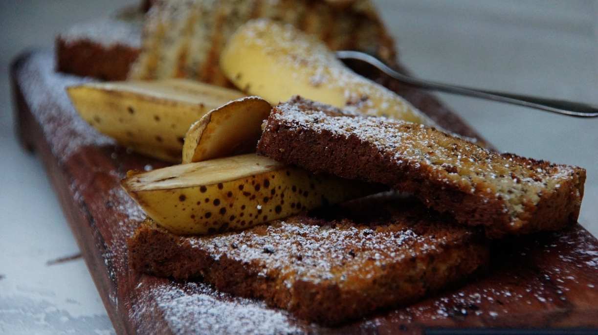

Bananenbrot
 55 Min.
55 Min.
 simple
simple
 16.10.2023
16.10.2023
Zubereitung
 Arbeitszeit ca. 20
Minuten
Arbeitszeit ca. 20
Minuten
 Gesamtzeit ca. 55
Minuten
Gesamtzeit ca. 55
Minuten
Schritt 1: Ofen auf 180 Grad Ober-/Unterhitze (Umluft: 160 Grad)
vorheizen. Kastenform (Innenmaße 23 x 10 cm) gut einfetten. Bananen mit
einer Gabel in einer Schüssel zerdrücken.
Schritt 2: Vanilleschote mit einem Messer der Länge nach
einritzen und mit dem Messerrücken auskratzen. Öl mit braunem Zucker und
Eier verquirlen. Mehl, Backpulver, Salz, Zimt und Vanilleschote
vermischen und mit der Öl-Eiermasse verrühren. Bananen-Püree einrühren.
Teig in die Form geben und im vorgeheizten Ofen etwa 55 Minuten backen.
Das Bananenbrot nach dem Backen vollständig auskühlen lassen, erst dann
aus der Form nehmen. Ein Bananenbrot ergibt ca. 10 Stücke.
Rezept erstellt von
 Davor
Davor